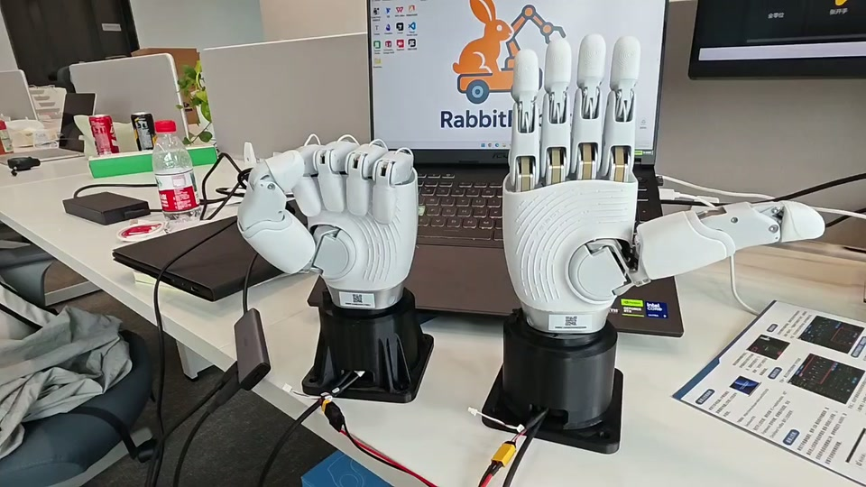
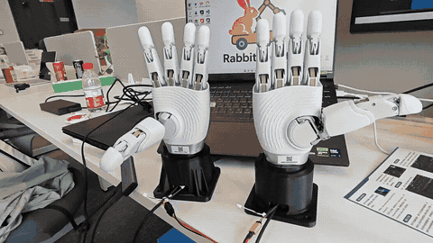

动作可复现
先用握拳、打开和自定义姿态验证 10 轴位置接口，再逐步补充速度、时间和左右手组合，避免“视频里动过”就算完成。
assets/action/omnihand_2025/assets/sequence/omnihand_2025/- 动作引用与 delay_ms 编排
Manipulation / Dexterous Hand / VLA
从会移动，到会理解，再到会操作
这是我在真实机器人路线上的新一段：把智元 OmniHand 灵动款 2025 接进 RabbitRobot 的具身操作研究线。当前以双手桌面台架为起点，围绕动作姿态、关节控制、左右手切换和后续触觉感知，逐步把灵巧手从“能动”推进到“可观察、可复现、可评估”的 VLA 实验对象。视频记录的是今天的真实双手操作过程，页面只写已经看到和已经确认的部分。
Current Evidence
产品规格、动作配置和现场视频分别承担不同的证据角色：规格说明“它能做什么”，配置说明“我如何控制它”，视频说明“今天真实发生了什么”。
双手实机台架 视频记录左右两只 OmniHand 2025 同处桌面环境，能看到手指与拇指的真实多关节动作。
10 轴控制面 产品手册对本型号上位机控制按 1–10 号主动轴组织，动作配置也以 10 轴位置数组保存。
握拳 / 打开 本地动作库已包含左右手“握拳”“打开”姿态，序列模板支持动作引用与延迟编排。
Active / 未夸大 当前是实机 bring-up 与操作研究阶段；触觉闭环、示教数据和 VLA 评估仍在推进。
Control Chain
我先把灵巧手当作一个可观测、可复现的执行器，再把它接进后续的操作策略和数据闭环。这样做的目的不是堆协议名词，而是让每一次动作都能追溯。
Product Facts
| 维度 | 公开资料 / 本地文件 | 对当前研究的意义 |
|---|---|---|
| 结构与自由度 | 产品资料标称 16 自由度，总长约 180 mm、重量约 500 g；上位机控制按 10 个主动轴组织。 | 紧凑尺寸适合桌面级人形/操作实验；研究侧先以 10 轴动作接口建立可复现控制。 |
| 触觉交互 | 手册描述覆盖手心、手背和五指的 400+ 点触觉感应，并支持指尖、手心、手背数据读取。 | 后续可以把接触状态纳入视觉语言动作闭环，而不是只依赖 RGB 画面。 |
| 动作配置 | 本地 omnihand_2025_default_actions.json 含左右手握拳/打开；序列模板支持动作引用、内联 positions 和延迟。 |
动作可以从一次性手势升级为可回放的实验片段，为示教和失败复盘留接口。 |
| 通信路径 | 产品资料提供 CANFD、RS485、USB 连接方式；CANFD 仲裁域 1M、数据域 5M，USB 串口为 460800。 | 底层通信、动作层和上层策略可以解耦，便于将来接入 ROS 2、数据采集和安全控制。 |
What I Am Building
先用握拳、打开和自定义姿态验证 10 轴位置接口，再逐步补充速度、时间和左右手组合，避免“视频里动过”就算完成。
assets/action/omnihand_2025/assets/sequence/omnihand_2025/把视觉观察和触觉反馈放在同一条记录链里，关注手指是否到位、物体是否接触、动作是否需要停止或恢复。
机器狗和 AMR 负责“到哪里”，灵巧手负责“怎么拿、怎么放、怎么接触”。两条线最终汇合到真实具身智能系统。
手册明确限制负载、冲击、尖锐物体和液体环境；我的公开记录也会区分产品能力、现场动作与尚未完成的闭环验证。
Visual Evidence
首页使用同一段现场视频生成轻量 GIF；本详情页保留 1280×720 原始 MP4，用于查看完整动作变化和桌面实验语境。


Research Positioning
先把左右手、供电、通信和关节动作放到真实桌面环境里，建立可靠的硬件起点。
把打开、握拳和自定义姿态变成可命名、可回放、可比较的动作原语。
同步视觉、关节反馈和触觉区域，记录动作过程中的接触、偏差与异常。
将语言目标和桌面物体组织成小任务，逐步接入示教、策略和动作数据。
用成功率、动作误差、接触状态和恢复过程评价系统，而不是只展示一次成功动作。
Honest Status
| 阶段 | 当前公开状态 | 进入下一阶段的判据 |
|---|---|---|
| 已记录 | 2026.08.20 双手 OmniHand 2025 桌面动作视频；封面 GIF 与静态图已整理。 | 保留原始视频语境，补充更清晰的分段动作和现场日志。 |
| 正在推进 | 围绕 10 轴动作、左右手姿态、动作序列与底层通信建立稳定的可回放控制链。 | 完成连续回放、位置/速度/电流记录和异常停止验证。 |
| 待接入 | 把触觉区域、视觉观察和语言任务统一到桌面操作数据结构。 | 形成带时间戳的观察—动作—反馈样例，并能复盘失败原因。 |
| 研究目标 | 从机器狗 / AMR 的 VLN 执行链，延伸到灵巧手的 VLA 操作链。 | 用可重复任务、动作误差、接触状态和恢复成功率评估真实操作能力。 |